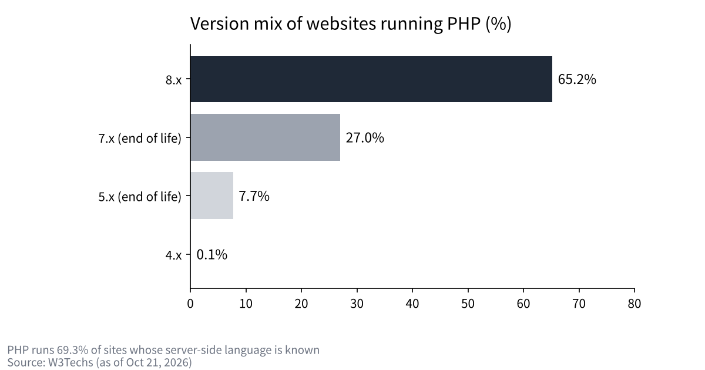
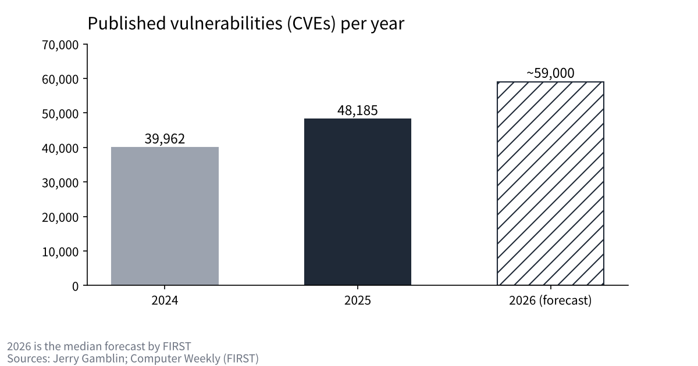

48 hours of PHP2Shell: how flaws in the language behind 70% of the web were found and closed
On the night of October 21, 2026, two flaws that could let attackers take over servers without logging in were disclosed in PHP, the language that runs much of the web.
Here in Tokyo, I lay out the timeline from the advance notice to the fixed releases and the wave of service shutdowns in Japan, using primary sources from the developers and public agencies.
I also check how the flaws work, what role AI played and what could happen next, setting it all against how my own company defends itself.

What happened between the advance notice and the fix
It started with information leaking ahead of the planned disclosure. Around 15:20 UTC on October 20, a post announcing the two flaws appeared on a tech forum and was later deleted. The PHP security team announced the release on its mailing list at 19:33 UTC the same day (04:33 on the 21st, Japan time).
The notice said there were two flaws rated 9.2 under the common CVSS v4.0 scoring system, and that fixed versions would ship at 14:00 UTC on the 21st (23:00 Japan time). It added that the release might come earlier if details leaked or exploitation was confirmed.
In Japan, things sped up from midday on the 21st. IPA, the national IT agency, asked organizations to prepare and take stock of where they use PHP, and at 15:50 a service for opening online shops went into emergency shutdown. That night, Prime Minister Sanae Takaichi posted on X with "an urgent request to act tonight," adding that temporarily taking sites offline was also an effective measure if they could not be fixed.
The fixed versions 8.5.12, 8.4.27, 8.3.36 and 8.2.35 were released between about 22:30 and 23:00 Japan time. The exact time differs slightly from outlet to outlet. By the morning of the 22nd, most of the services that had stopped were heading back online.
| Time (Japan) | Event | Source |
|---|---|---|
| 10/21 04:33 | PHP security team announces the release | php.announce/509 |
| 10/21 afternoon | IPA asks organizations to prepare and take stock | IPA |
| 10/21 15:50 | An online shop-building service goes into emergency shutdown | Company notice |
| 10/21 ~21:55 | The prime minister urges action and temporary shutdowns on X | Impress Watch |
| 10/21 22:30–23:00 | Fixed versions 8.5.12 / 8.4.27 / 8.3.36 / 8.2.35 released | php.net, CERT-EU |
| 10/22 08:00 | Stopped services begin to come back | Company notices |
What stopped in Japan
According to a tally by the security blog piyolog, at least 54 organizations took action, counting only those with public notices. Twenty stopped their whole service, seven stopped some features and 27 took down their own websites. The list runs from an online shop-building service, a messaging app for nursery schools and popular games to the health ministry's nursing-care information system, a university and railway companies.
Among banks, Shizuoka Bank stopped its online banking as a precaution, and it was reported that no damage had been confirmed as of 23:00 on the 21st. Most of the companies that stopped said they had not confirmed any attack or leak. They did not shut down because damage occurred; they closed the door until they could apply the fix and check.
Inside the flaws: running out of memory, and state left behind
The first, CVE-2026-109618, lies in what happens when memory runs out. When PHP passes its memory limit, it cuts the request short, but some internal data is left half-initialized. The cleanup that follows treats this broken data as valid. By abusing the parsing of file-upload forms, an attacker can trigger the memory shortage from outside.
The second, CVE-2026-109619, is a problem where the state of a previous request survives after its memory has been freed. When the same worker process handles the next request, it uses state that was never cleaned up. The upload-progress feature, which is on by default, is one of the paths to it.
In both cases, an attacker can run code on the server over the network without logging in. The most dangerous setup is Apache's mod_php, where an attack has been shown to succeed with a single request before any application code runs. The developers say there is no complete mitigation and that updating is the only safe option.
Why the impact reaches "70% of the web"
According to W3Techs, 69.3% of sites whose server-side language is known run on PHP. WordPress alone accounts for 39.6% of all sites, and Drupal and Joomla sit on the same language. Researchers demonstrated takeovers before login on all three.
However, "70%" is a usage figure, not a count of vulnerable sites. The deeper problem is how many old versions are still in use. Among PHP sites, 27.0% run the 7.x line and 7.7% run 5.x, both past end of life. The official fixed releases this time cover only 8.2 and later, and 8.1 and earlier received only minimal source patches. Support for 8.2 itself ends on December 31, 2026.

What did AI do?
According to OpenAI, the research firm Calif found the first flaw using GPT-5.6 Sol. Work began on July 30, the flaw was found on August 1 and it was reported to the developers on August 11. Wiz found the flaws independently on August 19 and says it used tools including Gemini 4 Argon.
What matters is that AI did not find them alone. Calif's account says the hypothesis came from humans, building on a bug another researcher found in 2004. AI took on the job of reading through the memory-management code and pinning down the concrete bug. The original out-of-memory flaw had been known since 2020, but no one had shown it could lead to a takeover.
About two and a half months passed between discovery and release. During that time, the developers, the finders and cloud providers coordinated the fix. The faster we get at finding flaws, the more the speed of this coordination becomes the core of defense.
Has exploitation been confirmed?
The answer depends on the source. IPA said on the 21st that it had not confirmed any attacks, and Huntress said it had not seen any in its own environment. On the other hand, watchTowr updated its page to say it had observed exploitation on its own decoy servers. The U.S. list of known exploited vulnerabilities (KEV) did not include it at the time of checking.
What is certain is that code claimed to exploit the flaws began circulating before the fixed versions were released. In hindsight, the companies that acted on the assumption that attacks would begin the moment the fix came out made a reasonable call.
What could happen next
First, more discoveries of the same kind will follow. The number of published vulnerabilities rose from 39,962 in 2024 to 48,185 in 2025, and about 59,000 are forecast for 2026. The more AI rereads old code, the more flaws that have slept for years will come to light.
Second, the grace period before fixes must be applied will shrink. In the U.S., a directive has reportedly required federal agencies to fix the most dangerous vulnerabilities within three days. Operations need to be rebuilt on the assumption that the gap between disclosure and exploitation can be a matter of hours.
Third, the cost of staying on old versions will rise. Versions past end of life will not get official fixes even when the next flaw is found. The longer updates are put off, the more a company is forced to choose between shutting down and rebuilding. The smaller the company, the more worthwhile it is to ask its contractors which version its website and booking systems run on.

How I see it
I run a shared office, and our members' information is managed with an outside service. I chose not to hold it in-house because I think the more information a company holds, the higher its risk. Even so, on the morning of the 22nd, I contacted the company that runs our system and asked, "Are we all right with this?"
This incident made me feel that IT needs the same approach to upkeep as a building. Walls and equipment are replaced with money set aside before they break. Software, too, should have the cost of replacing it ready before its support runs out.
AI gives the same speed to defenders and attackers alike. In an age when flaws are found faster, I think the difference will come from how fast they are fixed and how fast the decision to shut down is made. I want to watch that speed when choosing companies to work with and companies to invest in.
Sources
- PHP "Critical remote code execution vulnerabilities, update now" https://www.php.net/archive/2026.php
- PHP security release notice (php.announce/509) http://news-web.php.net/php.announce/509
- PHP supported versions https://www.php.net/supported-versions.php
- GitHub GHSA-w8hw-w9fx-j79w (CVE-2026-109618) https://github.com/php/php-src/security/advisories/GHSA-w8hw-w9fx-j79w
- GitHub GHSA-6wmf-4rv5-p3rp (CVE-2026-109619) https://github.com/php/php-src/security/advisories/GHSA-6wmf-4rv5-p3rp
- IPA notice on the PHP security release https://www.ipa.go.jp/security/security-alert/2026/pre-alert20261021.html
- CERT-EU Security Advisory 2026-018 https://cert.europa.eu/publications/security-advisories/2026-018/
- OpenAI "Coordinated disclosure of critical vulnerabilities" https://openai.com/index/coordinated-disclosure-of-critical-vulnerabilities/
- Calif "PHP2Shell" https://calif.io/php2shell/
- Wiz "PHP2Shell" https://www.wiz.io/blog/php2shell-php-rce
- watchTowr "CVE-2026-109618 FAQ" https://watchtowr.com/intelligence/php-cve-2026-109618-faq/
- Huntress https://www.huntress.com/blog/php2shell-leaked-critical-php-vulnerabilities
- W3Techs (PHP usage) https://w3techs.com/technologies/details/pl-php
- W3Techs (CMS market share) https://w3techs.com/technologies/overview/content_management
- Jerry Gamblin "2025 CVE Data Review" https://jerrygamblin.com/2026/01/01/2025-cve-data-review/
- Computer Weekly (FIRST's 2026 forecast) https://www.computerweekly.com/news/366638949/CVE-volumes-may-plausibly-reach-100000-this-year
- Cloud Security Alliance (summary of BOD 26-04) https://labs.cloudsecurityalliance.org/research/csa-research-note-bod-2604-ai-accelerated-patch-mandate-ente/
- piyolog (tally of shutdowns in Japan) https://piyolog.hatenadiary.jp/entry/2026/10/21/174516
- Impress Watch https://www.watch.impress.co.jp/docs/news/2150159.html
Photos: Taylor Vick / Ilya Pavlov (Unsplash). Charts by YUKI CAPITAL
I record my daily numbers and decisions on X.